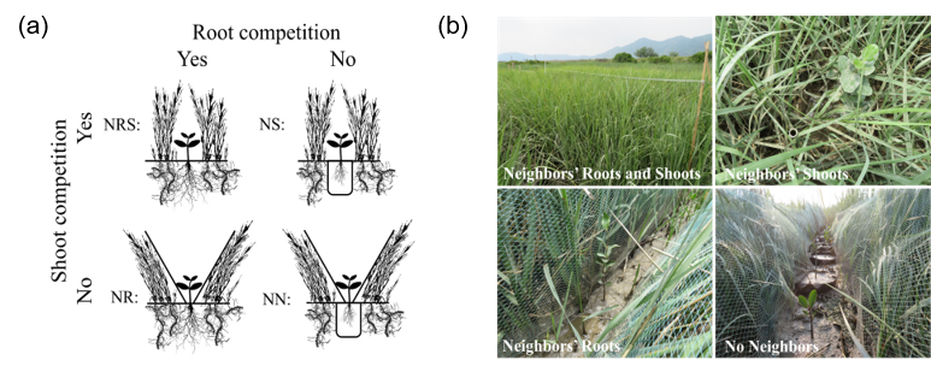

Research
Focusing on mangrove-Spartina alterniflora ecotones in the southern coast of China.
Both the manipulated field experiments and in-situ observations are employed.
Research Overview
Our main research subjects are mangrove and salt marsh communities in tropical and subtropical coasts of China, especially the mangrove-Spartina alterniflora ecotone in southern China. The mangrove-Spartina ecotone is influenced by climate change and human activities, and is a good system for studying the response mechanisms of coastal wetland vegetation to global change and anthropogenic disturbances.
I am an experimental ecologist who conducts controlled field research in coastal systems to explore the formation and maintenance mechanisms of natural community patterns. My core research focuses on the interaction mechanisms between mangroves and Spartina alterniflora under different environmental gradients, and predicts the future change trends of this ecotone. Our research results will provide scientific support for ecology and environmental protection, and also help understand the response of these critical habitats to global change.
Research Projects
Aboveground and Belowground Competition
Using the "target technique" to separate aboveground and belowground compartments, we set up 4 competition treatments: neighbor roots and shoots coexistence treatment, neighbor shoots only treatment, neighbor roots only treatment, and no neighbor treatment.

Salt Marsh Mesocosm Array Experiment
In-situ mesocosm experiments were conducted at multiple sites within the estuary, covering tidal elevation gradients and distributed along salinity gradients.
Research Interests
- Coastal wetland ecology
- Plant invasion ecology
- Plant clonal growth
- Mangrove-Spartina alterniflora ecotone dynamics
- Coastal clonal salt marshes